Kinh nghiệm tham quan Chùa Linh Phước Đà Lạt mới nhất 2026

Mục lục bài viết
- 1. Tổng quan về Chùa Linh Phước Đà Lạt
- 2. Lịch sử hình thành và các đời Trụ trì
- 3. Top 11 kỷ lục ấn tượng tại Chùa Linh Phước
- 4. Khám phá nét kiến trúc độc nhất vô nhị
- 5. Kinh nghiệm tham quan Chùa Linh Phước (Chùa Ve Chai)
- 6. Các địa điểm du lịch gần Chùa Linh Phước
- 7. Gợi ý ăn uống: Tiệm Nướng & Chill Xóm Lèo
Cách trung tâm thành phố Đà Lạt khoảng 8km, chùa Linh Phước là điểm đến tâm linh nổi tiếng bậc nhất nhờ kiến trúc độc đáo khảm từ hàng triệu mảnh sành, sứ. Không chỉ mang vẻ đẹp lạ mắt, nơi đây còn là nơi lưu giữ 11 kỷ lục quốc gia, thu hút hàng ngàn du khách và Phật tử mỗi năm.
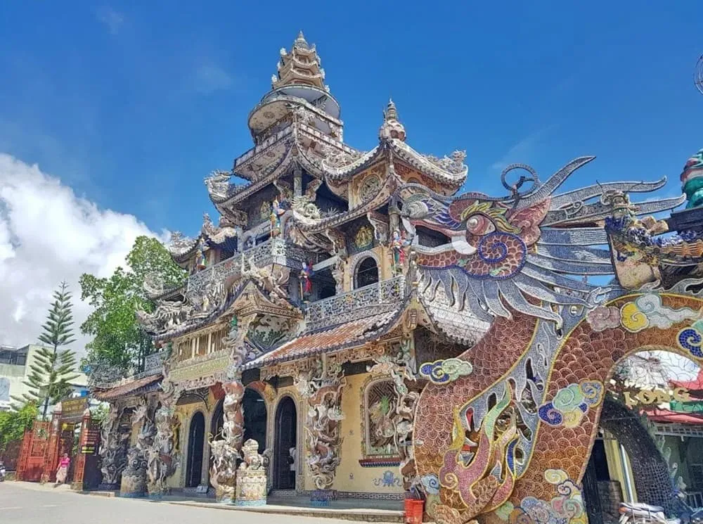
Nếu bạn đang lên kế hoạch khám phá phố núi, đừng bỏ lỡ "ngôi chùa Ve Chai" – một biểu tượng nghệ thuật và tâm linh giữa lòng Trại Mát.
1. Tổng quan về Chùa Linh Phước Đà Lạt
-
Địa chỉ: 120 Tự Phước, Trại Mát, Phường 11, TP. Đà Lạt.
-
Thời gian mở cửa: 07:00 – 17:00.
-
Phí vào cổng: Miễn phí.
Chùa Linh Phước thường được gọi với cái tên thân thuộc là chùa Ve Chai. Sở dĩ có tên gọi này là bởi hầu hết các công trình trong chùa đều được khảm tỉ mỉ bằng các mảnh sành, sứ và vỏ chai thủy tinh. Với diện tích lên đến 6.666,84m², ngôi chùa không chỉ là nơi chiêm bái mà còn là một tác phẩm nghệ thuật khổng lồ của xứ sở ngàn hoa.
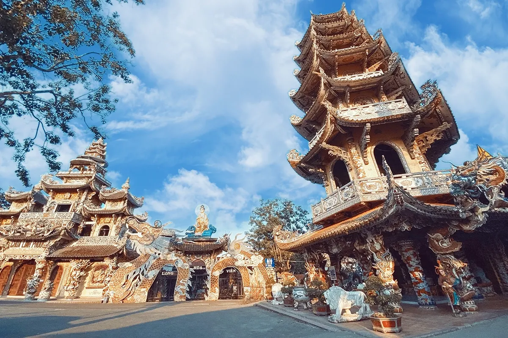
2. Lịch sử hình thành và các đời Trụ trì
Chùa Linh Phước được khởi công xây dựng vào năm 1949. Trải qua nhiều thập kỷ, đặc biệt là dưới thời Thượng tọa Thích Tâm Vị (trụ trì từ năm 1985 đến nay), chùa đã được trùng tu và mở rộng quy mô với diện mạo đặc sắc như hiện tại.
Danh sách các đời trụ trì tiêu biểu:
-
Hòa thượng Thích Minh Thể (1951 – 1954)
-
Hòa thượng Thích An Hòa (1954 – 1956)
-
Hòa thượng Thích Quảng Phát (1956 – 1959)
-
Hòa thượng Thích Minh Đức (1959 – 1985)
-
Thượng tọa Thích Tâm Vị (1985 – Nay)
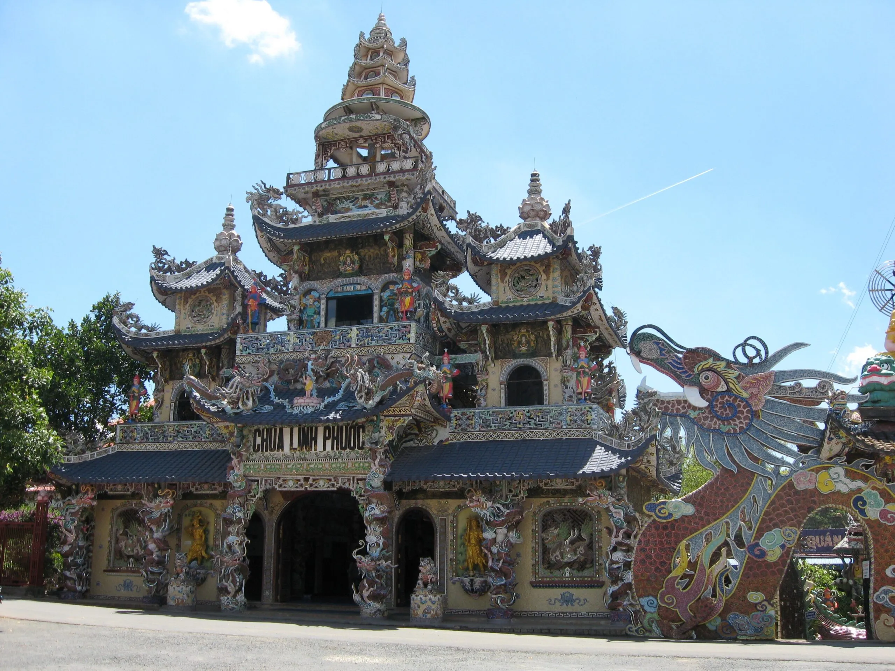
3. Top 11 kỷ lục ấn tượng tại Chùa Linh Phước
Chùa Linh Phước tự hào là "ngôi chùa giữ nhiều kỷ lục nhất Việt Nam". Những công trình tại đây không chỉ đồ sộ về quy mô mà còn chứa đựng giá trị văn hóa sâu sắc:
-
Tháp chuông cao nhất Việt Nam (37m).
-
Tượng Phật trong nhà bằng bê tông cao nhất Việt Nam.
-
Tượng Quan Thế Âm làm từ 600.000 bông hoa bất tử (Kỷ lục Châu Á).
-
Tượng Khổng Tước Vương bằng gỗ sao lớn nhất.
-
Ngôi chùa được tạo tác bằng sành sứ nhiều nhất.
-
Gốc gỗ trâm chứa bộ kinh Pháp Hoa lớn nhất.
-
Bộ phản bằng gỗ sao lớn nhất Việt Nam.
-
Tác phẩm nghệ thuật "Song Tùng Bách Hạc".
-
Mô hình tái hiện 18 tầng địa ngục lớn nhất Việt Nam.
-
Cặp rồng khảm sành dài nhất (49m).
-
Công trình kiến trúc mô phỏng cổ truyền đặc sắc.
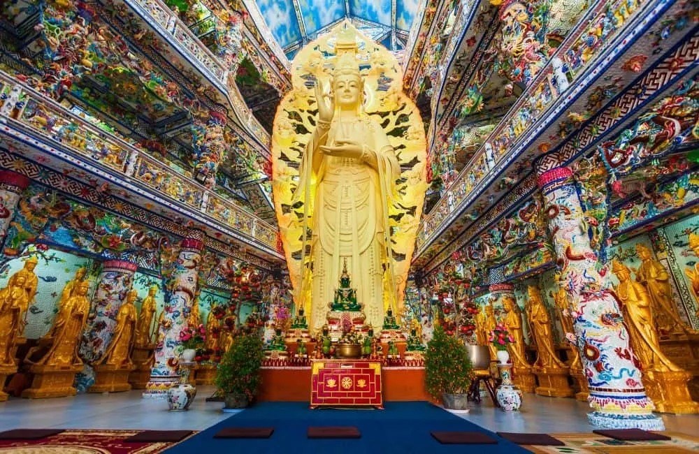
4. Khám phá nét kiến trúc độc nhất vô nhị
4.1. Sân Hoa Long Viên và con rồng khảm 12.000 vỏ chai
Ngay khi bước vào sân chùa, du khách sẽ ấn tượng với con rồng dài 49m uốn lượn quanh tượng Phật Di Lặc. Toàn bộ thân rồng được chế tác từ 12.000 vỏ chai bia, tạo nên một cảnh tượng vô cùng mãn nhãn.
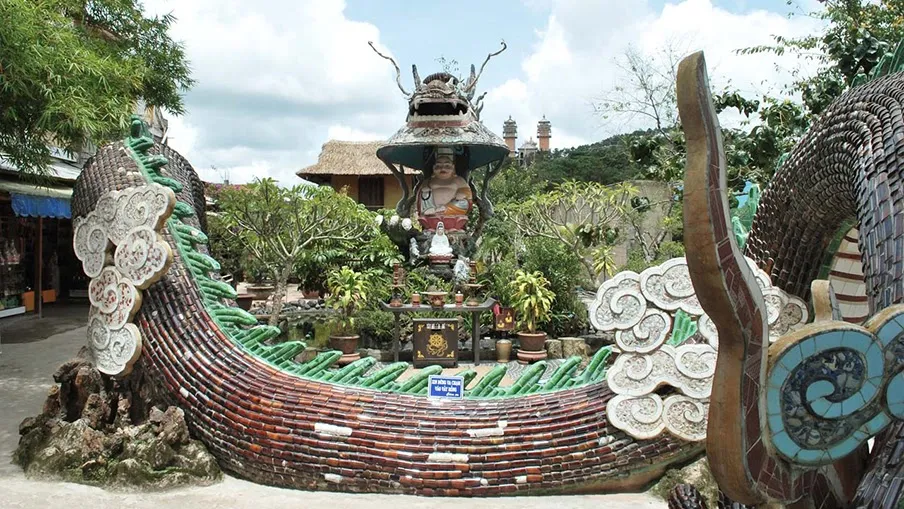
4.2. Tháp chuông Linh Pháp và Đại Hồng Chung
Tháp chuông cao 7 tầng (37m) là điểm nhấn kiến trúc nổi bật. Bên trong treo chiếc Đại Hồng Chung nặng 8.500kg. Du khách thường đến đây viết tâm nguyện dán lên chuông và thỉnh chuông cầu bình an cho gia đình.
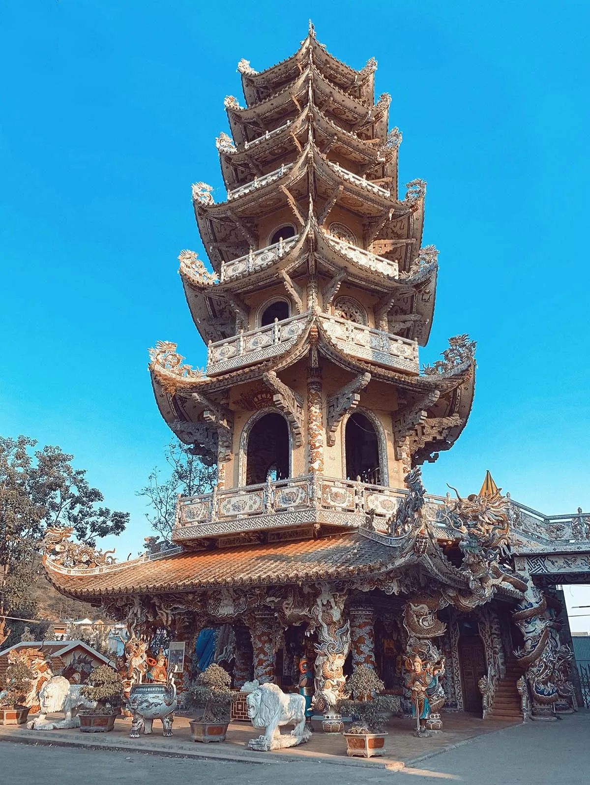
4.3. Tượng Phật bà bằng hoa bất tử kỷ lục
Đặt bên hông chánh điện, bức tượng Quan Thế Âm cao 18m được kết từ 650.000 bông hoa bất tử là niềm tự hào của chùa. Mỗi năm hoa đều được thay mới để giữ nguyên vẻ rực rỡ, trang nghiêm.
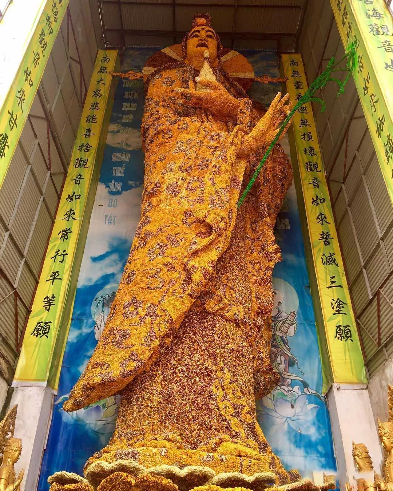
4.4. Khám phá 18 tầng địa ngục tại chùa Ve Chai
Đây là công trình thu hút rất nhiều sự hiếu kỳ của du khách. Với chiều dài hơn 300m, 18 tầng địa ngục tái hiện lại điển tích Mục Liên tìm mẹ, đồng thời truyền tải những bài học sâu sắc về nhân quả và lòng hiếu thảo.
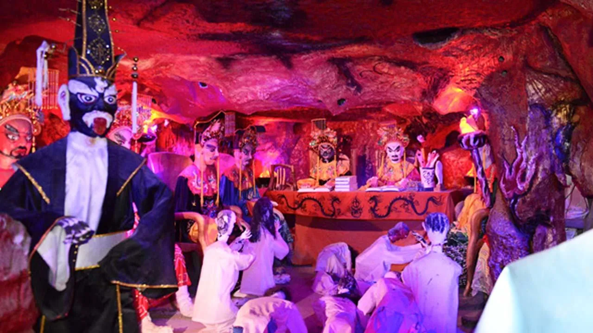
5. Kinh nghiệm tham quan Chùa Linh Phước (Chùa Ve Chai)
5.1. Cách di chuyển
Từ Chợ Đà Lạt, bạn đi theo hướng đường Trần Hưng Đạo – Hùng Vương để ra Quốc lộ 20 hướng về Trại Mát. Khi thấy tượng Phật Di Lặc lớn bên tay phải, bạn rẽ vào khoảng 70m là tới cổng chùa.
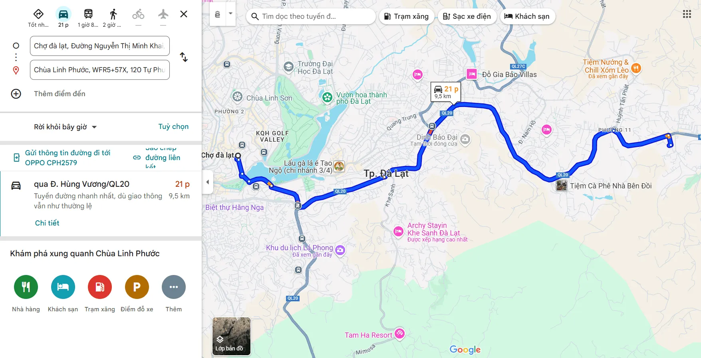
5.2. Những lưu ý quan trọng
-
Trang phục: Vì là nơi tôn nghiêm, bạn cần mặc quần áo kín đáo, lịch sự (tránh váy ngắn, áo hở vai).
-
Thời điểm: Nên đi vào buổi sáng (7h – 9h) để tránh đông đúc và đón được ánh nắng đẹp nhất để chụp ảnh.
-
Chiếc bàn tự xoay: Nếu có thời gian, hãy ghé thăm khu vực trưng bày cổ vật để tận mắt chứng kiến hiện tượng "bàn tự xoay" kỳ bí chưa có lời giải.
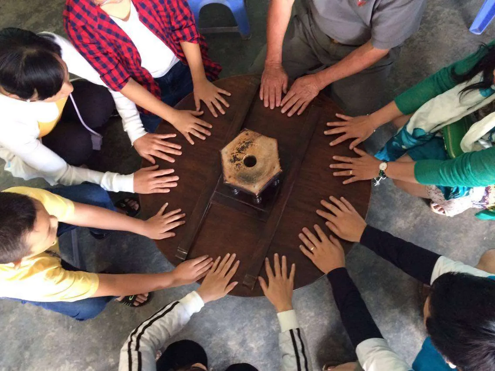
6. Các địa điểm du lịch gần Chùa Linh Phước
Để chuyến đi thêm trọn vẹn, bạn có thể kết hợp tham quan các tọa độ cực "hot" cùng tuyến đường:
-
Đồi chè Cầu Đất: Thiên đường săn mây và sống ảo xanh mướt.
-
Vườn hoa Cẩm Tú Cầu: Nơi sở hữu những cánh đồng hoa khổng lồ.
-
Ga xe lửa Đà Lạt: Tuyến đường sắt cổ kính nối liền trung tâm và Trại Mát.
Để có một chuyến tham quan chùa Linh Phước – chùa Ve Chai thật trọn vẹn và đáng nhớ, bạn đừng bỏ qua những kinh nghiệm hữu ích dưới đây.
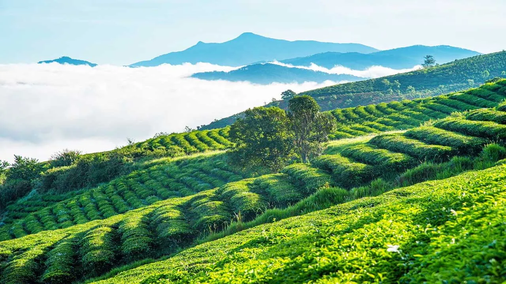
7. Gợi ý ăn uống: Tiệm Nướng & Chill Xóm Lèo
Sau khi tham quan xong, đừng quên ghé qua Tiệm Nướng & Chill Xóm Lèo (113 Huỳnh Tấn Phát). Đây là địa điểm lý tưởng để bạn:
-
Thưởng thức đồ nướng nóng hổi trong tiết trời se lạnh.
-
Ngắm nhìn tàu hỏa chạy ngang qua trong ánh hoàng hôn cực "chill".
-
Chiêm ngưỡng thung lũng đèn lung linh về đêm.
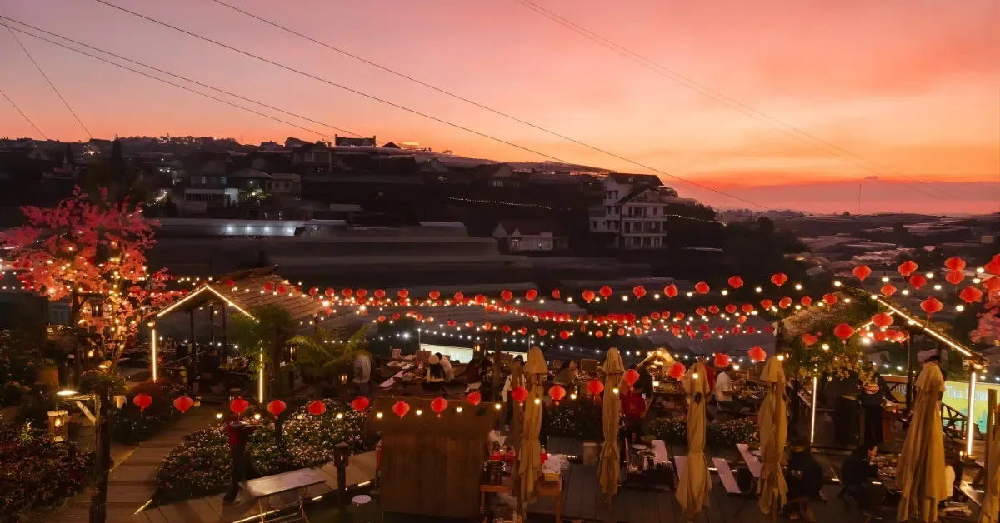
📌 Thông tin liên hệ Tiệm Nướng & Chill Xóm Lèo:
-
Địa chỉ: 113 Huỳnh Tấn Phát, Phường 11, TP. Đà Lạt, Lâm Đồng
-
Đặt Bàn: Tại Đây
-
Chỉ Đường: Xem bản đồ tại đây
-
Hotline: 📞 076.45.27.336 – 08.99.42.84.34 – 0902.91.22.40
Chùa Linh Phước không chỉ là một ngôi chùa, mà là một bảo tàng nghệ thuật khảm sành độc đáo của Việt Nam. Hãy lên lịch trình ghé thăm "Chùa Ve Chai" để tự mình cảm nhận vẻ đẹp tâm linh rực rỡ này nhé!